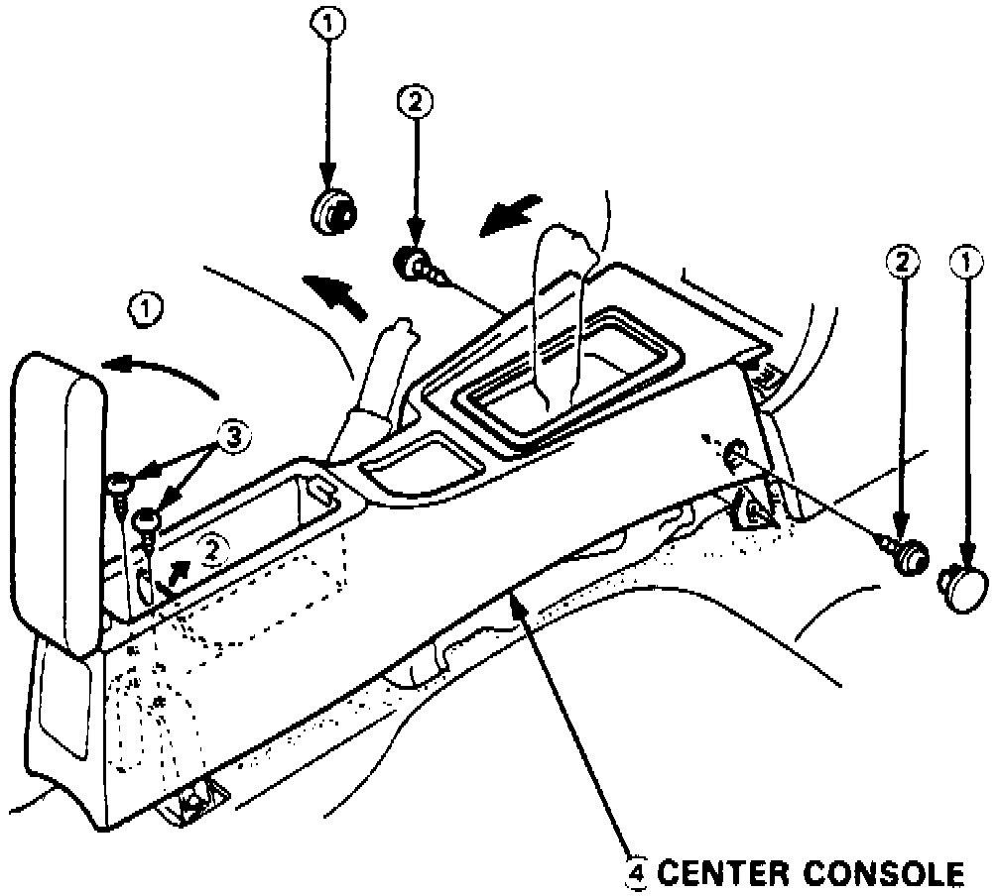

Radio/Stereo: Service and Repair
NOTE: The original radio has a coded theft protection circuit. Be sure to get the customer's code number before- disconnecting the battery.
- removing the radio fuse from the under-hood fuse/relay box.
- removing the radio.
Fig. 14 Center Console Removal:

1. Obtain five digit radio theft protection code from customer.
2. Remove center console as shown in Fig. 14.
3. Remove heater control assembly and ashtray.
4. Remove four radio assembly attaching screws, then pull rearward.
5. Disconnect radio electrical connectors and antenna, then remove radio.
6. On models equipped with amplifiers, remove audio power amplifier attaching screws, disconnect, then remove.
7. Reverse procedure to install.
8. After service, reconnect power to the radio and turn it on. When the word "CODE" is displayed, enter the customer's 5-digit code to restore radio operation.